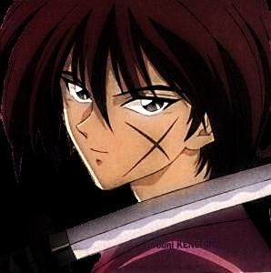

About Kenshin
Kenshin is the main character in the anime Ruroni Kenshin. Once known as Battosai the man slayer for his incredible skill to kill oponenents in battle. Haunted by his past, he is now a wandering samurai who refuses to kill ever again, instead using his skill for defense. He will do anything to protect others and will often put himself in harms way on behalf of someone else. He weilds the reverse blade sword which has a dull cutting edge, preventing him from killing someone in battle.
Kenshin holding reverse blade sword
Appearance
- Long hair.
- Youthfull face.
- Small slender build
- Cross shaped scar on cheek.
Other Characters
While Kenshin is the main character, there are also many other interesting characters who come along side Kenshin. Click the links to learn more.